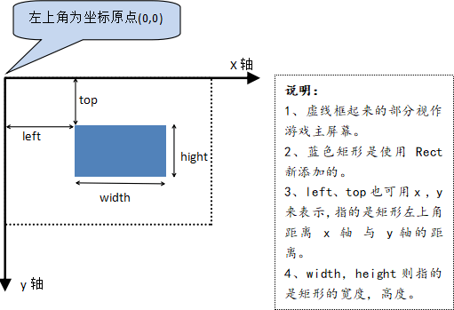
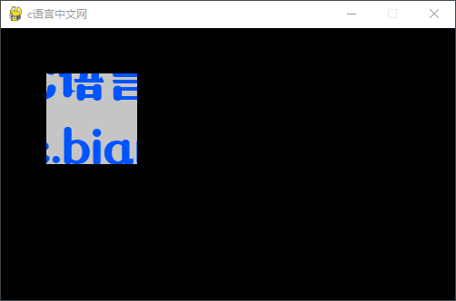

Pygame Rect区域位置（图解）
Rect（rectangle）指的是矩形，或者长方形，在 Pygame 中我们使用 Rect() 方法来创建一个指定位置，大小的矩形区域。函数的语法格式如下：
从上述运行结果可以看出，我们在图片上截取了一个和 rect1 同样大小的矩形区域（100*100）。
Rect（矩形区域）对象还提供了一些常用方法。如下表所示：
同时 Rect 对象也提供了一些关于矩形大小的常用的属性，如下所示：
rect =pygame.Rect(left,top,width,height)Rect 表示的区域必须位于一个 Surface 对象之上，比如游戏的主窗口（screen）。上述方法由四个关键参数值构成，分别是 left、top、width、height，为了方便大家理解这些距离的含义，下面给出了一张示意图：

注意：在 Pygame 中以游戏主窗口的左上角为坐标原点。
下面看一组简单的使用示例，如下所示：
import pygame
pygame.init()
screen = pygame.display.set_mode((500,300))
pygame.display.set_caption('c语言中文网')
image_surface = pygame.image.load("C:/Users/Administrator/Desktop/c-net.png")
rect1 = pygame.Rect(50,50,100,100)
# 在原图的基础上创建一个新的子图（surface对象）
image_child= image_surface.subsurface(rect1)
rect2 = image_child.get_rect()
#输出的矩形大小为 100*100
print(rect2)
while True:
for event in pygame.event.get():
if event.type == pygame.QUIT:
exit()
#在屏幕上显示子图的区域
screen.blit(image_child,rect1)
pygame.display.update()
程序的运行结果如下：

图1：程序运行结果
图1：程序运行结果
从上述运行结果可以看出，我们在图片上截取了一个和 rect1 同样大小的矩形区域（100*100）。
Rect（矩形区域）对象还提供了一些常用方法。如下表所示：
| 方法 | 说明 |
|---|---|
| pygame.Rect.copy() | 复制矩形 |
| pygame.Rect.move() | 移动矩形区域，接受一个列表参数 |
| pygame.Rect.move_ip() | 移动矩形（无返回） |
| pygame.Rect.inflate() | 增大或缩小矩形大小 |
| pygame.Rect.clamp() | 将矩形移到另一个矩形内 |
| pygame.Rect.union() | 返回一个两个矩形合并后的矩形。 |
| pygame.Rect.fit() | 按纵横比调整矩形的大小或移动矩形。 |
| pygame.Rect.contains() | 测试一个矩形是否在另一个矩形内 |
| pygame.Rect.collidepoint() | 测试点是否在矩形内 |
| pygame.Rect.colliderect() | 测试两个矩形是否重叠 |
同时 Rect 对象也提供了一些关于矩形大小的常用的属性，如下所示：
x,y 表示矩形距离 x、y 轴的距离 top, left, bottom, right #在坐标系内描述矩形的大小 topleft, bottomleft, topright, bottomright #返回一个描述矩形大小的元组 midtop, midleft, midbottom, midright #返回一个描述矩形大小的元组 center, centerx, centery #(centerx，centery)表示矩形中央坐标(x,y)的值 size, width, height w,h #用于描述矩形的width、height下面看一组简单的示例演示，如下所示：
import pygame
# 对应left/top/width/height
rect1 = pygame.Rect(0,0,100,100)
print('x的值是{}；y的值是{}'.format(rect1.x,rect1.y))
print('bottom的值是{}；right的值是{}'.format(rect1.bottom,rect1.right))
# 设置居中的距离
print(rect1.center,rect1.centerx,rect1.centery)
# 返回值为 (centerx,top)
print(rect1.midtop)
# 返回值为 (right,centery)的元组
print(rect1.midright)
# 返回值为（left,bottom）
print(rect1.bottomleft)
# 返回矩形区域大小，元组格式
print(rect1.size)
输出结果如下：x的值是0；y的值是0 bottom的值是100；right的值是100 #设置中心努力 (50, 50) 50 50 (50, 0) #midright (100, 50) #bottomleft (0, 100) #size (100, 100)我们还可以通过属性对来设置，或者者更改矩形区域的大小，如下所示：
rect1.left = 30 rect1.center = (70,70)除了通过 Rect 对象来构造一个矩形区域之外，我们还可以使用
rect属性来构建一个矩形区域。在 Pygame 中有许多函数都提供了rect属性，比如有下列函数：
surface.fill((0,0,255),rect=(100,100,100,50))上述代码会在 surface 对象的区域内选定一个 rect 区域，并将该区域填充为蓝色（RGB(0,0,255)）。
关注公众号「站长严长生」，在手机上阅读所有教程，随时随地都能学习。内含一款搜索神器，免费下载全网书籍和视频。

微信扫码关注公众号